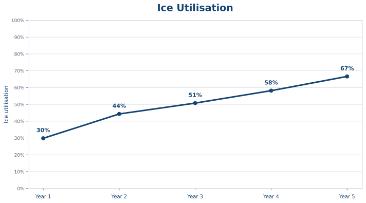
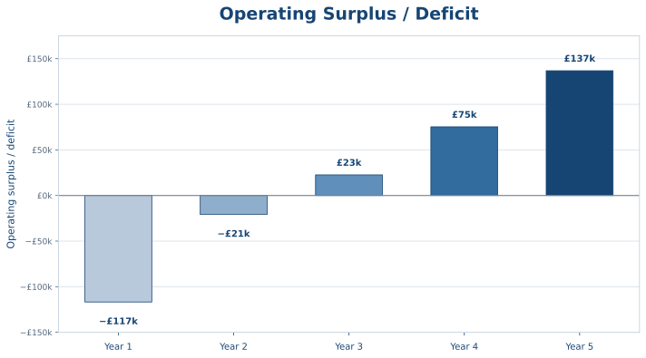

Business Plan
A sustainable future for curling and our community.
Turning Our Vision into Reality
Curl Ayrshire Charity (CAC) has developed a business plan to guide the creation and operation of a new community curling facility at Somerset Park, Ayr.
This is a project costing close to £3 million, designed to secure the future of curling in Ayrshire while creating a welcoming community facility where people can participate in sport, meet friends and enjoy a range of activities.
Building a Sustainable Business
The project requires significant initial investment in the building, ice plant and equipment. Our business plan sets out how the facility will be developed, funded and operated for the long term.
We expect the centre to move towards significant profitability within its first few years of operation, as curling participation grows, membership increases and income develops from other activities and community use.


The charts above illustrate the projected growth in ice utilisation and the centre’s financial performance over its first five years of operation. As membership and use of the facility increase, the business is expected to move from an initial operating deficit to a sustainable operating surplus. The cash flow projections take account of the operating losses anticipated during the first two years.
By Year 5, the centre is projected to be operating at just 67% of its available ice capacity, leaving considerable scope for further growth as participation in curling increases. The remaining capacity is expected to be concentrated in off-peak ice times, so the challenge will be to attract additional users to fill these sessions. This offers an opportunity to increase income with relatively little additional operating cost.
Investing in the Future
Curl Ayrshire Charity is exploring funding opportunities and working to identify the financial support needed to bring the project to fruition. This will include strong financial support from the members.
Our goal is to establish a financially sustainable facility that serves curlers and the wider community for generations to come.
A clear plan. A sustainable future. A lasting community legacy.